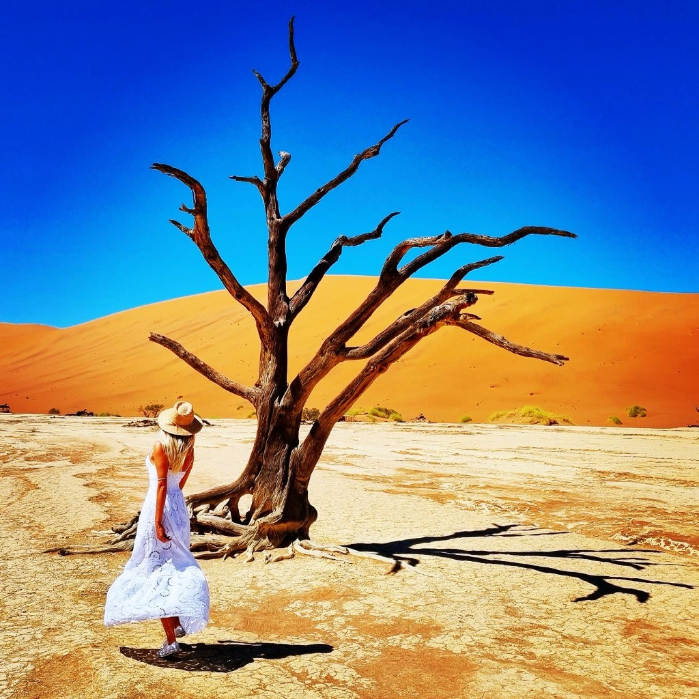

Master of Advanced Studies
AISTS Sport Administration & Technology · EPFL
Multifaceted · Multilingual · Impact-driven
Multifaceted, multilingual, impact-driven. Cross-functional professional with 15+ years across tech, design, and global programme delivery — BA, MA, MBA, work in 20+ countries, and execution in six languages.
From QA engineering and UX/UI to leading international programmes for UNICEF, FIFA, and the Olympic Games — and product teams shipping to millions — I thrive when the stakes are high and results count. Today I blend relentless QA at ABC Fitness.
I use AI every day to streamline workflows, accelerate delivery, and reduce errors — enabling faster, smarter, and more scalable outcomes.
Core strengths: QA engineering · UX/UI design · project & event management · startup development · AI-powered execution.
A single thread: clarity under pressure — whether it is a stadium, a sprint, or a roadmap.
Volunteer armies, accreditation, suppliers, running orders — I have walked the Torch Relay route and the Rio 2016 back-of-house, and I still love the first hour when chaos becomes a checklist.
UNICEF campaigns, federations, sponsors, exec teams — I translate ambition into aligned messaging, crisp media kits, and outcomes you can point to in a debrief.
Manual and automated testing, release validation, and UX/UI craft — from Ironhack nights to consumer apps at real scale. Quality is the story users never have to hear.
A few chapters from the field — arenas, federations, startups, and regulated research — each teaching me how teams win when nobody is watching.
Test design, automation collaboration, defect triage, regression and release validation — the quiet work that lets members and staff trust every deploy.
UX/UI for creative apps with serious reach (including the Filmic family), design systems that engineers actually adopt, and QA depth that keeps store ratings honest.
Sport for development around the European Games & Torch Relay; volunteer energy scaled from 30 → 135; partnerships, visibility, and media that moved the needle.
McDonald's Player Escort Programme for FIFA World Cup 2018 — onsite delivery, running orders, supplier tenders, and hospitality checks when the world was watching Moscow.
Global event platforms, tournament tooling, accreditation, results publishing, international relations — building the invisible rails so kicks and medals stay centre stage.
Volunteer training and scheduling, crisp reporting upward, and cool-headed recovery for staff and guests — the sprint after the sprint.
Market research, client relationships, strategic sales — roughly 30% client acquisition growth in year one with marketing and leadership in lockstep.
AISTS Sport Administration & Technology · EPFL
Business Administration · Joint programme INCAE Business School / Kozminski University
International Business Communication · Belarusian State Economic University
Bootcamp — Design Thinking, research, Figma, prototyping, usability testing
The toolkit behind the calm: platforms I live in weekly, from discovery to release.
Eleven cities, thousands of moving parts — I lived in the detail: running orders, tenders, contracts, and quality checks so restaurants, teams, and families felt the magic, not the stress.
Behind the velvet rope: VIP journeys, sponsor rhythms, supplier choreography, and volunteer energy — orchestrated so guests remembered the sport, not the logistics.
On the ground in Rio: volunteer training and rosters, crisp reporting upward, and calm recovery when plans wobbled — because athletes deserve a flawless backstage.
Where sport meets purpose: programmes around the 2nd European Games and Torch Relay — visibility, activations, and media that turned partnerships into public momentum.
Club and federation corridors, aligned with UNICEF values: campaigns and activations that made child rights part of the match-day conversation.
From a spark to a movement: onboarding, training, and coordination across the event arc — scaling volunteers from 30 to 135 without losing heart or quality.
GMS, TMS, accreditation, signage, results — the invisible engines behind world championships. I helped federations and hosts speak the same operational language.
Side by side with the Secretary General: centennial storytelling, international visibility, and the diplomacy of celebration.
Operational backbone for the Admin Director — rolling out a programme that put athlete preparation centre stage.
Supporting the OC President on Solidarity projects — where community outreach and athlete pathways meet long-term impact.
Field project energy: defining talent-identification parameters so physical education could scale with clarity — consulting with a conscience.
Mexico City intensity: strategy workshops for wood-processing expansion — numbers, culture, and narrative in one room.
Full-time MBA across Costa Rica and Poland — strategy, finance, and leadership tested in two continents and one career arc.
Venues, law, finance, logistics, governance — the full-stack education for people who want sport to work as brilliantly as it inspires.
Top-chart creative apps, tight design systems, and QA that refuses to ship 'good enough' — craft at consumer scale.
Test design, automation handoffs, defect triage, and release gates — partnering with product and engineering so members feel stability, not churn.
Traceability under pressure: system through functional testing with Jira, Trello, TestRail, and QA Touch — mission-driven delivery, engineering discipline.
Regulated trials, meticulous documentation, and daily empathy for sites and patients — the roots of my obsession with quality.
Design Thinking, research, IA, Figma prototypes, usability tests, branding — the full UX sprint in weeks, not quarters.
A fresh desktop and mobile skin for a VR brand — clarity first, spectacle second.
End-to-end onboarding UX for an AI-assisted energy story — fewer clicks, warmer first-run, smarter defaults.
A mobile concept nudging healthier baskets — research-backed flows and a playful visual voice.
Surgical screen redesigns inside a pro camera app — where muscle memory meets modern UI.
Citizens, farmers, and a fairer food chain — Design Thinking and UX research shaping a platform with soul.
Salon presence that feels calm and premium on every breakpoint — desktop and mobile in harmony.
A campaign film to recruit ambassadors and spotlight child-labour risks in supply chains — storytelling with a hard edge.
If you need someone who has wrangled Torch Relays and release trains — and still gets excited by a crisp retro — I am open to roles that blend delivery leadership, complex events or programmes, and quality-conscious product teams.
